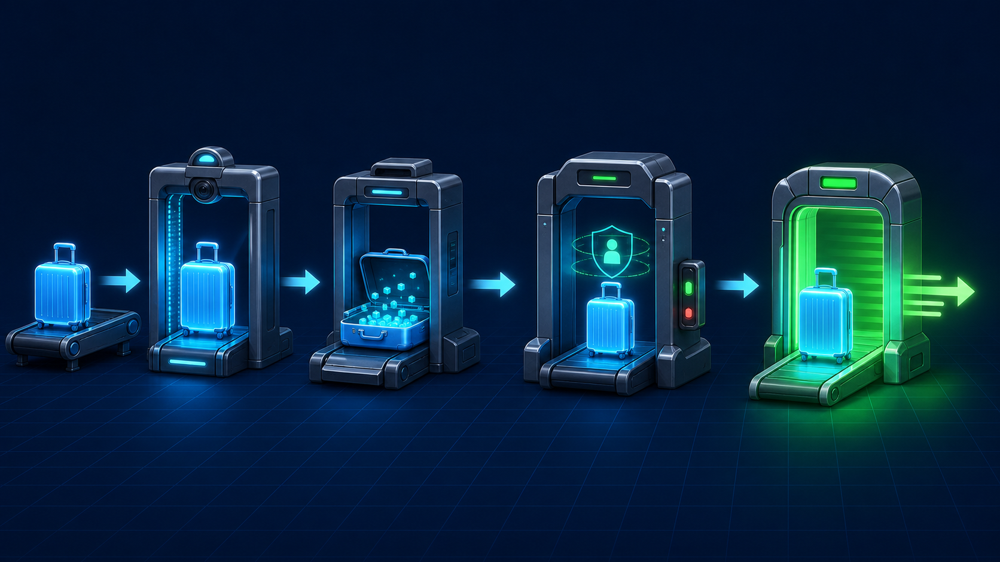

4편 · 60분 — 왜 프레임워크인가
남의 코드를 가져다 쓰는 npm을 익히고, 2-1의 서버를 익스프레스로 포팅해 before/after를 본다.
npm init → package.json 필드 훑기npm i express → node_modules·lock 파일 관찰node_modules 지우고 npm i로 복원 → “그래서 깃엔 안 올림”app.js로 2-1 REST 서버를 익스프레스로 포팅^만 짚고, 나머지 npm 명령어는 노트 N-3.createServer((req,res)=>{
if(req.url==='/' &&
req.method==='GET'){ … }
else if(req.url==='/user'
&& req.method==='POST'){ … }
// if 지옥…
});
app.get('/', (req,res)=>{ … }); app.post('/user', (req,res)=>{ … }); app.put('/user/:id', … ); app.delete('/user/:id', … ); // Content-Type도 자동
프레임워크는 마법이 아니라, 섹션 1~2에서 손으로 한 노가다를 잘 정리해둔 것.
익스프레스의 심장 미들웨어를 하나씩. 쿠키·세션 개념도 여기서 압축해 흡수한다.

app.use((req, res, next) => { // 여권 검사… next(); // 안 부르면 여기서 멈춤! });
app.use로 직접 미들웨어 작성 → next() 빼먹으면 멈추는 것 시연morgan(로그) · static(1-3의 fs 고생 회수) · express.json · cookie-parserexpress-session 적용 → 민감한 건 서버, 열쇠만 쿠키쿠키 — 브라우저에는 조작 가능한 작은 열쇠
세션 — 민감한 정보는 서버 금고에 보관
이 “열쇠만 맡긴다” 구조가 5-4의 Passport serialize/deserialize로 이어진다.
길어진 라우팅을 폴더로 나누고, 서버가 죽는 경험을 통해 예외 처리를 흡수한다.
routes/ 폴더로 라우터 분리 (2-2 모듈 회수) + 라우트 매개변수uncaughtException은 최후의 방어선일 뿐임을 강조app.use('/', indexRouter); app.use('/user', userRouter); app.use((req, res) => { // 404: 아무 라우터도 못 잡으면 res.status(404).send('Not Found'); }); app.use((err, req, res, next) => { // 인자 4개 = 에러 전용 console.error(err); res.status(500).send('서버 에러'); });
req/res 자주 쓰는 것은 치트시트로. 에러 목록은 노트 N-8 — “외우지 말고 메시지를 AI에.”
사람마다 다른 HTML을 만든다. “박서연님, 안녕하세요”를 위한 템플릿 엔진.
includeres.render로 2-1의 users 데이터를 화면에 뿌리기익스프레스 기본기 끝.
아직도 서버를 끄면 데이터가 증발한다.
다음 섹션, 드디어 데이터베이스.